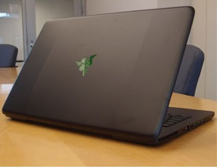
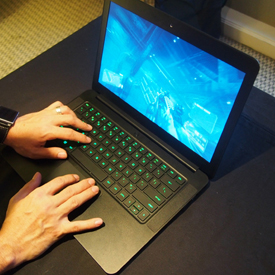

Test novog "Razer Blade"
Razer Blade
Razer je poslao daleko u " tanke gaming laptop " kategorije sa Blade za poslednjih nekoliko godina , počevši od 17 - inčni model sa i dodavanjem verziju sa 14 - inčni u 2013.
Ali model 2014 čini neka značajna poboljšanja , uglavnom u njegove nadogradnje Nvidia grafika i ozbiljno poboljšana IGKSO 3,200k1,800 - piksel rezolucije osetljiv na dodir displej .
Razer Blade je lepotica . I to je tanka . I to je verovatno najuzbudljiviji igrački laptop tamo odmah
Dizain
Prošlogodišnji 14 - inčni Blade ostavila drugu - ekran osetljiv na dodir UI na 17 - inčni Blade Pro i otišli su na izgled koji oseća kao retina ekranu MacBook Pro obučeni u crno . Izgled je isti ovaj put , i nema problema sa tim ; gaming laptop ili ne , Blade je metalic zadivljuje to je divno elegantan i veoma dobar .
Na 0,7 inča debelim i 4.47 funti , ovo je laptop koji ce lako klizi u bilo koji rancu . Tastatura i touchpad su takođe veoma dobri , dobro postavljen i reaguje . Tastatura ima posebno " antighosting ", koji u osnovi znači više istovremenih tasteri koji zajedno registrujete dobro . Dve diskretni dugme dodirne table oseća pomalo klimava , ali to je manji cepidlačenje ;
za igranje verovatno ćete koristite spoljnog miša , u svakom slučaju. Navigacija Vindovs 8.1 je lako zahvaljujući ekranu osetljivom na dodir , čineći ga jednim od najboljih igračkih laptopova za one koji možda još uvek želite da uradite svakodnevne poslove sa dodirom .
Od sjajnim zelenim tastera na tastaturi na gliphlike Razer logo koji svetli sa zadnjeg poklopca , ovo je igrački laptop koji uzima potcenjen stil nad sjajnim rainbov dioda i kockasto hromiranim rešetkama . Cenim to .
Preformanse
Pa kako nova "noža" igre? Opremljen Nvidia GeForce GTKS 870m GPU sa 3GB GDDR5 memorije stoji na veliki kraju Nvidia grafičke laptop spektra ( ali ne apsolutni najviši ) , i radi veoma dobro, zaista u našim testovima .
BioShock Infinite ran na 66 slika u sekundi pri 1,920k1,080 i visokim grafičkim podešavanjima sa UltraDKS11 ; ili na 98.5fps na istoj rezoluciji i srednjih grafikom . Rigorozniji Metro: Last Light Test ran na 15.3fps . Igre bili su oštri - Bioshock Infinite pogledao dobar u 3,200k1,800 kao , ali očigledno je u to visokoj rezoluciji ti je bolje da Ratcheting smanjite nivo grafičku srednje ili niže podešavanja . Ugrađeni zvučnici pumpaju iznenađujuće glasno i audio zapisa , previše .
Zaista sam voleo igranje igara na ovom Razer , ali posle samo pola sata dno kućišta dobila ozbiljno vruće . To se dešava sa igračkim laptopovima , ali ovo ide mnogo topliji nego prošlogodišnje Blade . I trajanje baterije dok igranje kapi prilično brzo . Imamo samo oko 92 minuta trajanja baterije kada igranje igrica na grafičkim postavkama srednjih , koji ne treba da čudi . Nakon pola sata ili tako visoko sa zvučnika miniranja , moj baterija pala do 60 odsto .

